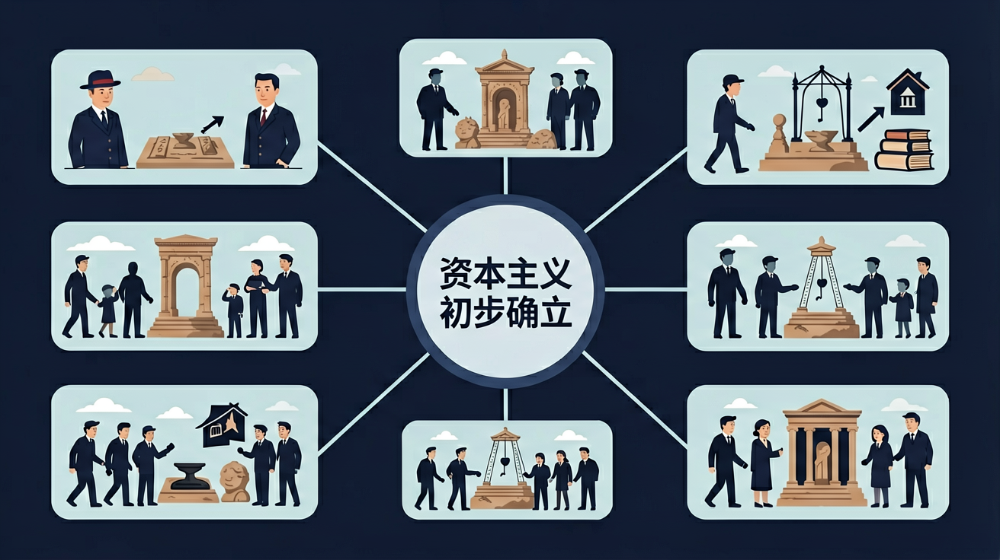

世界近代史：资本主义发展、社会主义运动和民族解放运动。

🎯 能说出资本主义制度确立的3个典型国家
🎯 能判断工业革命对资本主义制度的影响
🎯 能分析英国率先确立资本主义制度的原因
❓ 为什么英国能第一个确立资本主义制度？
❓ 工业革命和资本主义制度有什么关系？
❓ 我们现在的生活和资本主义制度确立有啥联系？
学完这一课，这些问题你都能自信地回答。
资本主义制度初步确立的标志性事件是？
下列哪项不是资本主义经济特征？
资本主义制度初步确立是初中历史的重要内容。世界近代史：资本主义发展、社会主义运动和民族解放运动。
了解人类文化的多样性，理解和尊重世界各国、各民族的文化传统，认识中国历史与世界历史相互关联。
点击时代按钮切换世界格局；结合本课主题观察空间分布。
把卡片拖到核心概念 / 方法技能 / 应用情境 / 常见误区。
拖完 4 项后自动判分。
英、美、法等国通过革命或独立战争，逐步确立资本主义政治制度；工业革命又提供经济动力。资本主义制度在欧美初步确立，世界联系空前加强，东方开始面临西方冲击。
政治线写三国道路差异，经济线写工业革命。总结“资本主义世界体系开始形成”。
常见误区：常见误区是以为各国道路完全一样，或忽视其对殖民地的扩张一面。
资本主义制度在欧美初步确立，主要依靠？
1. 现代企业股份制：荷兰东印度公司（1602年成立）的股票交易模式至今影响着上市公司。阿姆斯特丹证券交易所每日处理的电子交易，其制度源头可追溯至17世纪荷兰的资本主义商业创新。2023年全球股票市场总市值约109万亿美元，其制度基础正是早期资本主义的产权确认机制。
2. 专利保护体系：英国1624年《垄断法》确立的14年专利保护期，直接启发了现代知识产权制度。2022年华为公司全球专利申请量7689件，这种技术创新的保障机制，其法律框架源于资本主义初期对发明者权益的保护需求。
3. 中央银行制度：1694年英格兰银行的建立模式被美联储（1913年）等机构沿用。现代央行调节利率的工具，如2023年美联储7次加息对抗通胀，其政策逻辑与早期资本主义稳定金融的需求一脉相承。全球现有178家中央银行，其组织架构都能看到资本主义金融制度的影子。
1. 问题：为什么北美殖民地能较和平过渡到资本主义制度，而法国需要暴力革命？分析线索：比较两地前资本主义社会结构差异——北美没有封建贵族体系，13个殖民地自1607年起就存在自治传统；法国则有顽固的三级会议制度（教士13万人、贵族14万人占人口2%却垄断特权）。注意1763年英国颁布的《 proclamation line》与1789年法国三级会议召开时的债务危机（财政赤字达1.12亿里弗尔）造成的不同压力。
2. 问题：资本主义制度确立过程中，法律文书（如《权利法案》）与实际权力转移是否同步？思考路径：考察1689-1701年间英国王室实际权力变化——虽然威廉三世仍保有军队指挥权，但议会通过《三年法案》（1694）控制财权；对比1707年英格兰与苏格兰合并时，苏格兰丧失立法权但保留司法体系。可参考历史学家克里斯托弗·希尔提出的"精英妥协论"。
先看15-16世纪地理大发现如何重塑世界格局：葡萄牙亨利王子（1394-1460）的航海学校培养的探险家，使欧洲贸易中心从地中海转移到大西洋沿岸。接着英国都铎王朝（1485-1603）时期的宗教改革，通过1534年《至尊法案》将教会财产转入新兴资产阶级手中。这种经济基础变化在17世纪爆发制度冲突——英国议会1640年通过《三年法案》限制王权时，伦敦商人提供的贷款占军费开支的60%。
当荷兰的银行体系（1609年阿姆斯特丹银行成立）与英国工厂制度结合后，资本主义运行机制趋于成熟。法国则因旧制度（Ancien Régime）的顽固性导致1789年三级会议演变为国民议会，期间巴黎妇女十月进军凡尔赛的粮价骚动（面包价格涨至日均工资的88%），凸显了经济诉求与政治变革的联动。
最后观察制度扩散的差异性：美国1776年《独立宣言》废除长子继承制（英国传统）时，南方奴隶制却延续到1865年。这种矛盾揭示资本主义制度确立的本质——英国1832年改革法案将选民从40万扩大到65万（占成年男性20%），其核心仍是财产权而非人权。从拿破仑法典（1804年）到日本明治维新（1868年），全球资本主义化进程始终伴随着本土化改造，这正是理解现代世界形成的关键。
1. 错误表现：认为英国资产阶级革命（1640年）后立即建立君主立宪制。认知根源：混淆1649年处死查理一世与1688年光荣革命的时间线。正确理解：英国经历两次内战（1642-1651）、克伦威尔护国公时期（1653-1658）和斯图亚特王朝复辟（1660），直到1689年《权利法案》颁布才确立君主立宪制。典型证据是1688年荷兰执政威廉三世带兵登陆英国，史称"不流血的革命"。
2. 错误表现：把法国大革命（1789年）的《人权宣言》等同于美国《独立宣言》（1776年）。认知根源：忽视美国革命先于法国革命13年的事实。正确理解：《独立宣言》提出"人人生而平等"针对殖民地与宗主国关系，而《人权宣言》第一条"人生而自由平等"直接挑战了法国三级会议制度。关键区别在于法国革命中1793年处死路易十六后出现雅各宾派恐怖统治（约4万人被处决）。
3. 错误表现：认为工业革命（1760年代开始）直接导致资本主义制度确立。认知根源：混淆经济基础与上层建筑的关系。正确理解：英国圈地运动（15-18世纪约300万英亩土地被圈占）和殖民贸易积累原始资本在先，政治制度变革在后。典型例子是1832年英国议会改革才让工业资产阶级获得选举权，此时距瓦特改良蒸汽机（1776年）已过去56年。
复制提示词到 AI 学伴，生成「资本主义制度初步确立」的时间轴或事件提纲；也可以上传你手绘的示意图，请 AI 学伴点评。
复制后可粘贴到 AI 学伴继续对话。
下列关于资本主义制度确立过程的描述，正确的是？
通过分析工业革命时期的社会变革，探究其对资本主义制度确立的影响
先独立作答，再点选项查看对错与错因。
下列哪项最能体现资本主义制度的确立？
工业革命对英国社会最直接的影响是？
下列哪项不属于资本主义制度的基本特征？
工业革命时期，____的发明标志着动力机械时代的到来。
答案：蒸汽机
蒸汽机的发明和应用是工业革命最重要的技术突破
资本主义制度确立的重要标志之一是____的形成。
答案：工厂制度
工厂制度集中体现了资本主义的生产方式
✅ 实为资本主义发展推动工业革命
💡 混淆因果关系
✅ 实为贵族用暴力剥夺农民土地
💡 忽视阶级压迫本质
口诀：英法美三巨头，立宪革命自由
类比：像手机系统更新：旧功能（封建制度）卡顿，新系统（资本主义）需要硬件（工业革命）支持
（中考真题）英国《权利法案》规定：国王不得废止法律。这体现资本主义制度的？
（迁移题）如果某国规定'总统可随意没收企业财产'，违背资本主义制度的？
（综合题）工业革命与资本主义制度的关系是？
点击节点跳转到对应章节；可切换布局。